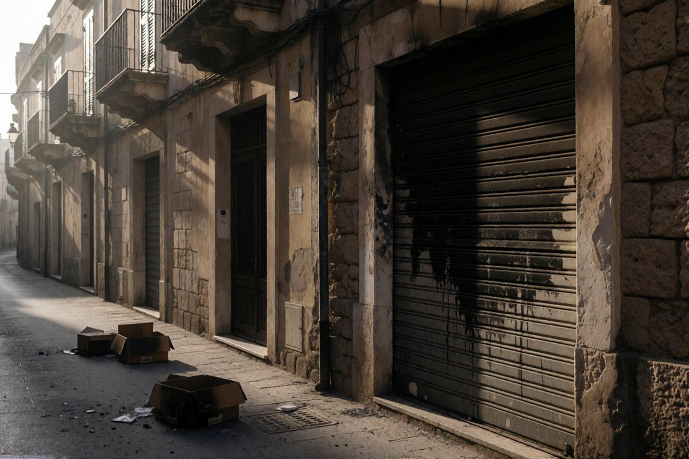

Mafia e antimafia · 14 novembre 2026
San Cataldo, saracinesca bruciata: un arresto per estorsione

Per la Direzione distrettuale antimafia di Caltanissetta l'incendio è la risposta a un no. Il movente, secondo l'accusa, non era il pizzo mensile ma un compenso per dei lavori che l'arrestato non voleva pagare.
di Franco Zanghì
Una saracinesca bruciata, nel centro di un paese della Sicilia. Per la Direzione distrettuale antimafia di Caltanissetta è la risposta a un no. Siamo a San Cataldo, in provincia di Caltanissetta: sabato 14 novembre i carabinieri hanno reso noto di aver arrestato un uomo del paese, in esecuzione di un'ordinanza di custodia cautelare in carcere firmata dal giudice per le indagini preliminari di Caltanissetta e chiesta dalla Dda.
Le accuse sono due: estorsione e danneggiamento seguito da incendio. Entrambe aggravate dal metodo mafioso.
Il fatto e il movente
Il fatto risale al 2025. Secondo l'accusa l'uomo aveva rivolto una richiesta estorsiva ai titolari di un'attività commerciale del centro, che però non hanno ceduto. Poi qualcuno ha dato fuoco alla saracinesca del locale: per gli inquirenti è stato lui.
Il movente, come lo riportano le testate locali, è particolare. Non una somma da versare ogni mese, ma un conto da non pagare: secondo l'accusa l'uomo voleva evitare di dare al titolare il compenso per una serie di lavori. Un ingiusto profitto, lo chiama l'accusa.
Chi è l'arrestato, secondo gli investigatori
Le indagini le hanno condotte i carabinieri della tenenza di San Cataldo. Nel comunicato ripreso dalle testate l'uomo è indicato come riconosciuto in passato quale esponente di spicco di Cosa nostra nella zona fra San Cataldo e Sommatino. Su di lui pesa già una confisca di beni per circa 2 milioni di euro, ormai definitiva: è una misura di prevenzione, non una condanna.
L'arrestato è da considerarsi innocente fino a sentenza definitiva. Siamo nella fase delle indagini preliminari: il giudice ha condiviso l'impostazione della Procura, ma la valutazione resta aperta nelle fasi successive, con il contributo della difesa. Finora non risultano dichiarazioni pubbliche del difensore.
Il punto
Una richiesta estorsiva rimasta senza risposta, una saracinesca bruciata nel 2025 e adesso un arresto con l'aggravante del metodo mafioso. A decidere saranno i giudici. Ma una cosa si può dire già: quei commercianti hanno detto no. In un paese dove tutti si conoscono, è la cosa che costa di più, e che senza un riscontro dello Stato non si ripete una seconda volta.
Fonti
- Il Fatto Nisseno, l'arresto eseguito dai carabinieri della tenenza di San Cataldo, 14 novembre 2026
- Video Regione, il comunicato dei carabinieri di Caltanissetta, 14 novembre 2026
- Quotidiano di Sicilia, le accuse di estorsione e danneggiamento seguito da incendio, 14 novembre 2026
- Giornale di Sicilia, il profilo dell'arrestato e la confisca definitiva, 14 novembre 2026
Indagini preliminari in corso alla data di pubblicazione: la custodia cautelare non è una condanna.
Questo articolo nasce dalla pagina Gli Eroi dell'Abisso, dove la stessa storia è raccontata in video.